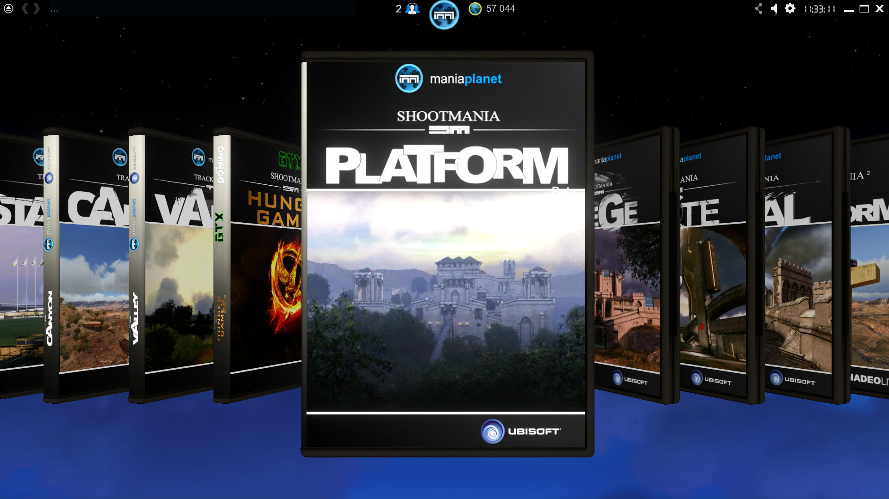
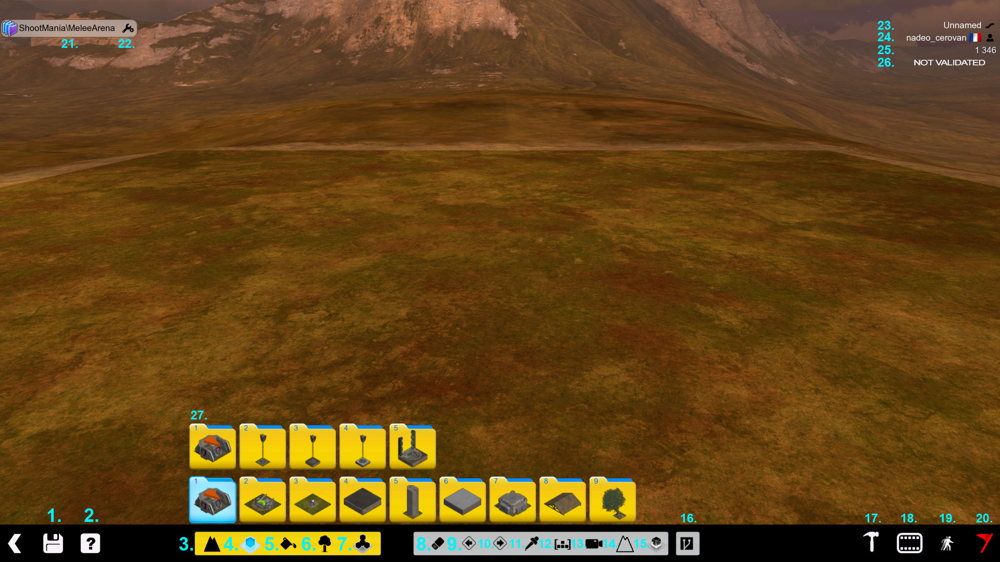
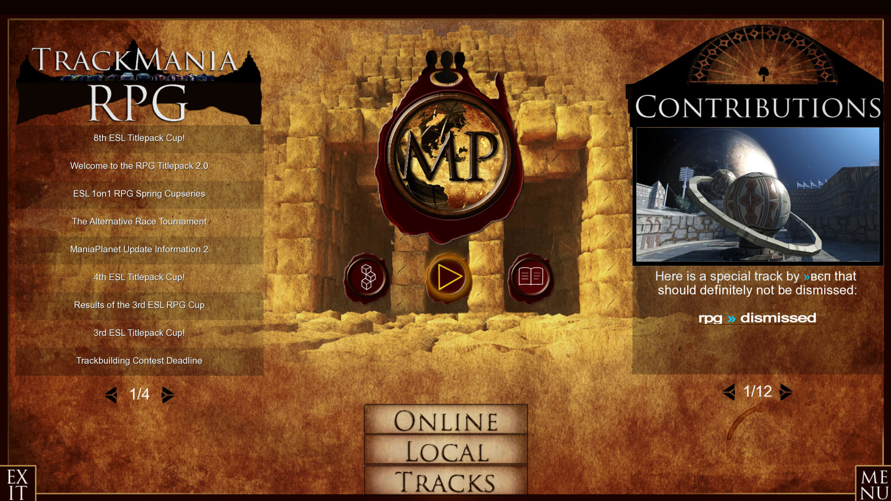
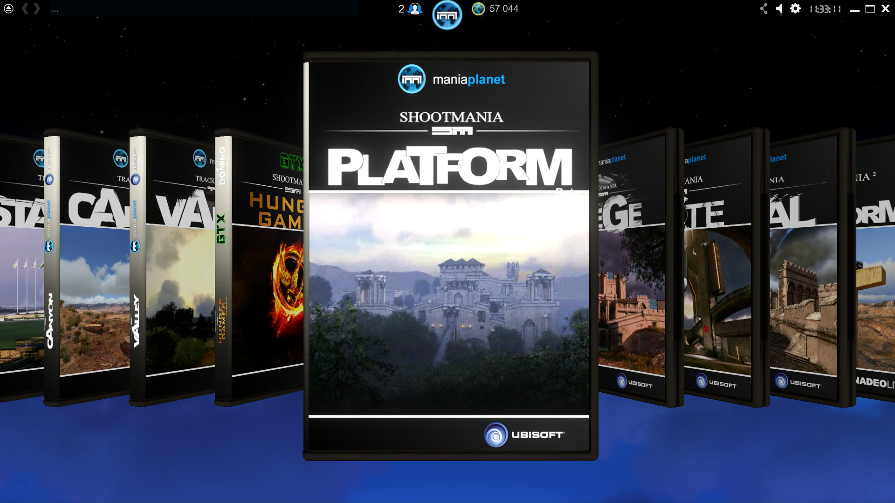
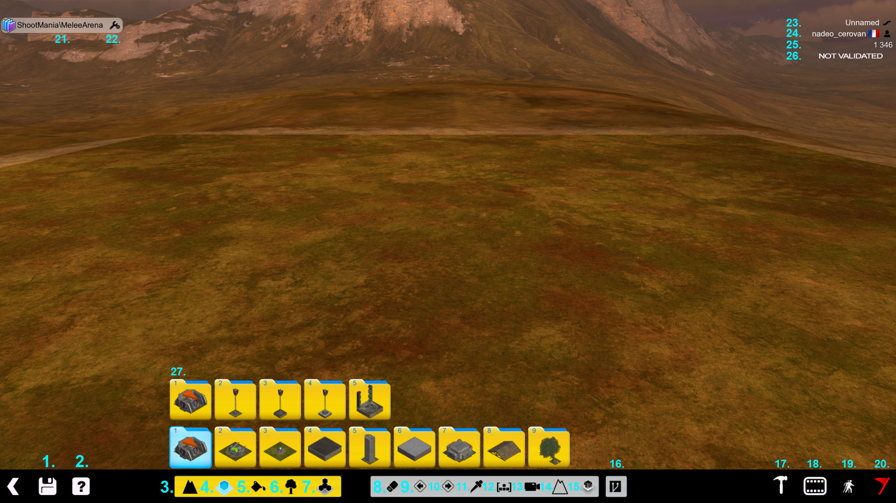
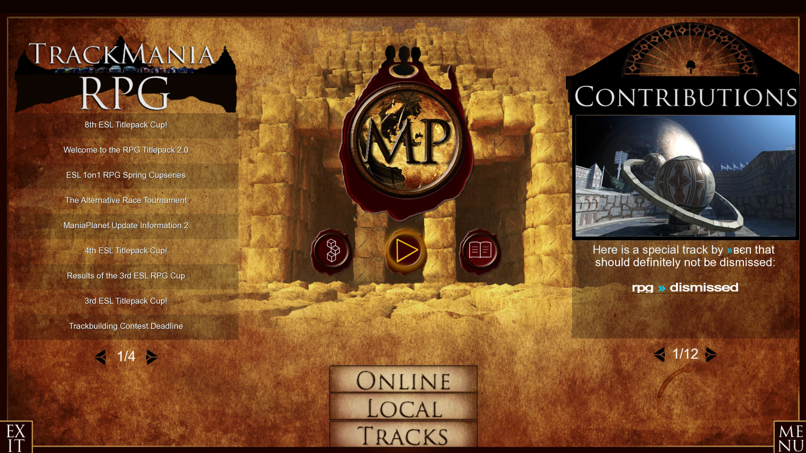
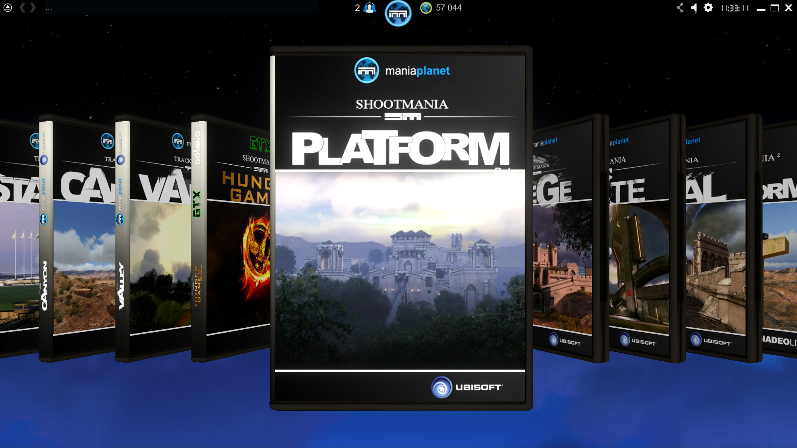
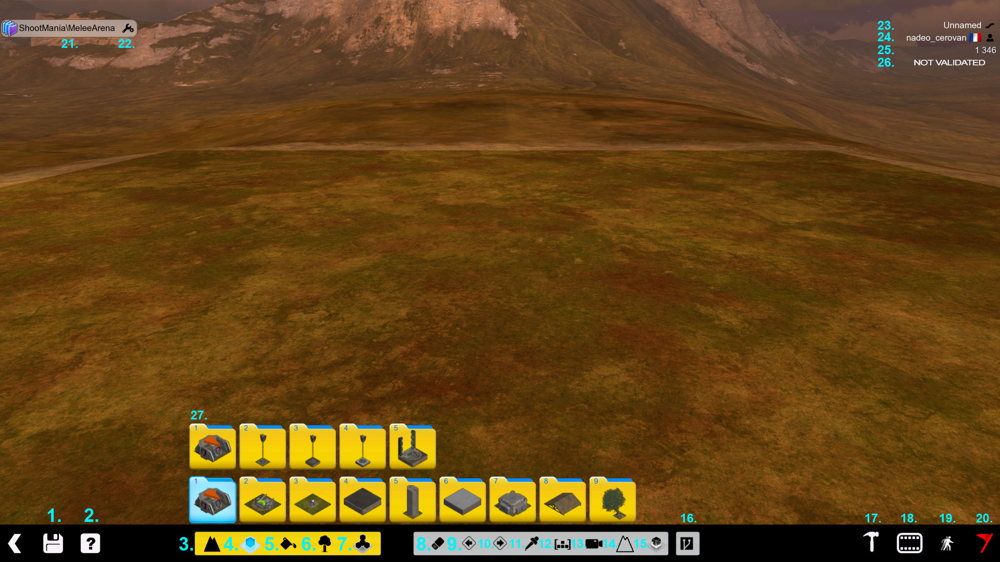
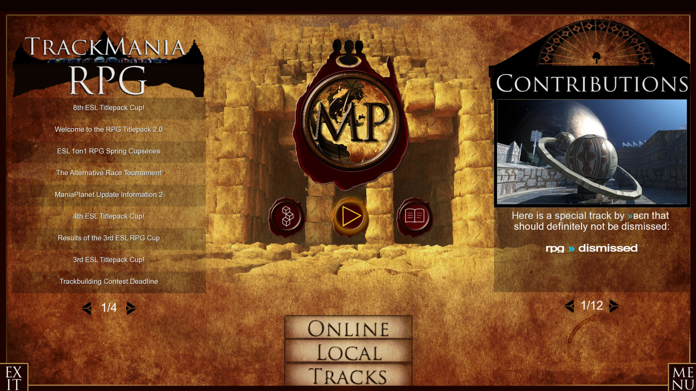

The Maniaplanet documentation is created to help to use the ressources of the tools of the Maniaplanet game operating system. With it you'll be able to do several things among:



The documentation is generated from the maniaplanet documentation github repository.
Feel free to fork and make pull request to contribute!
Non technical documentation can be found on ManiaPlanet wiki.